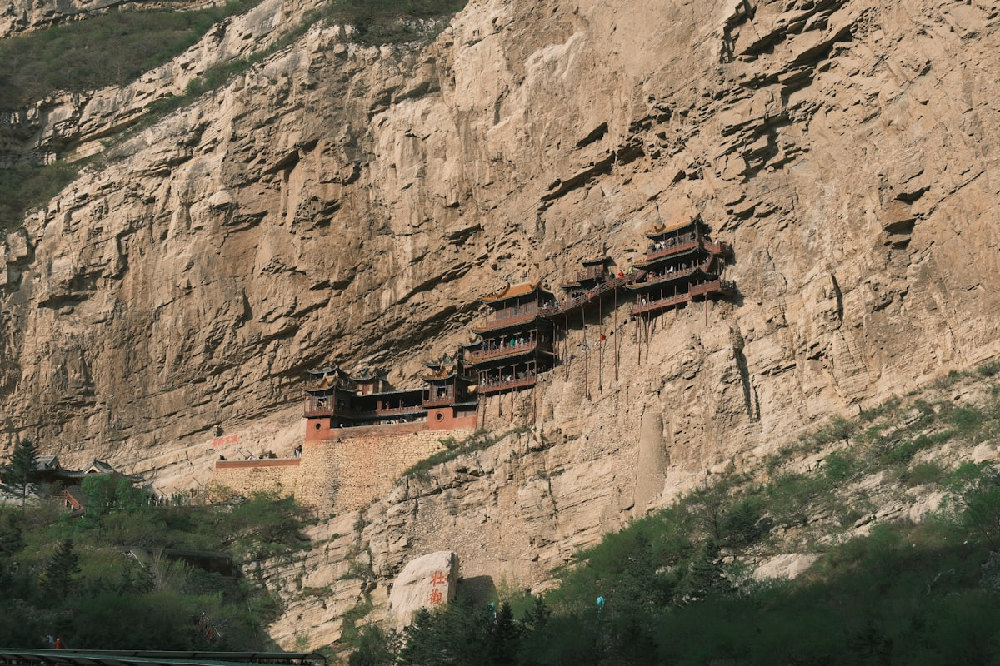
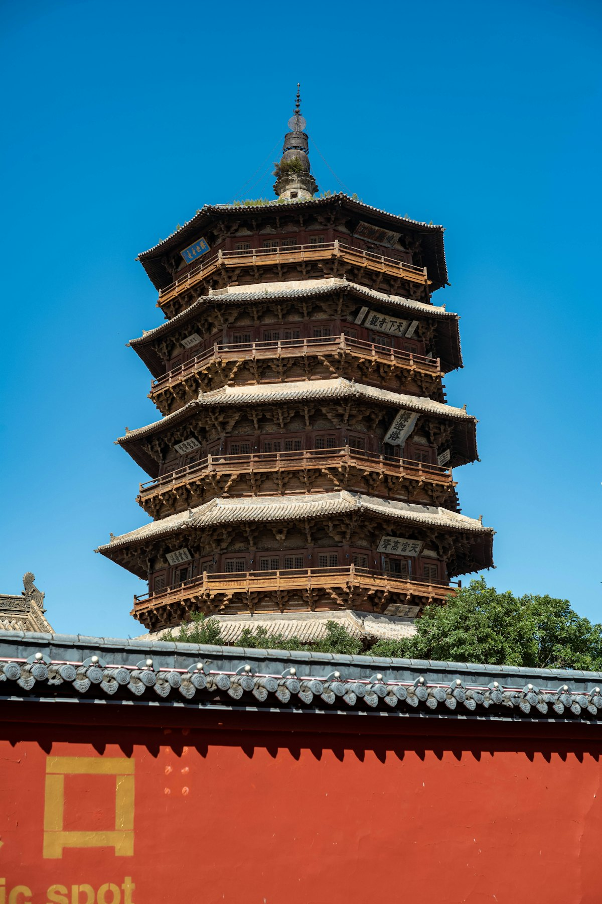
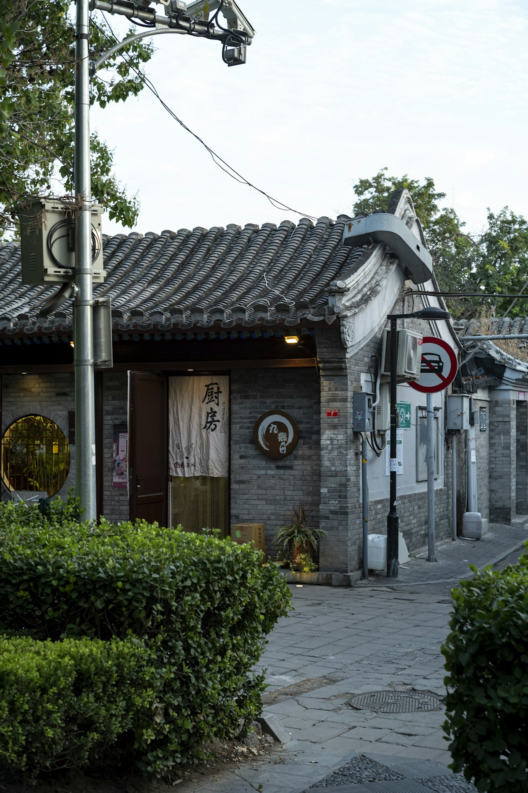
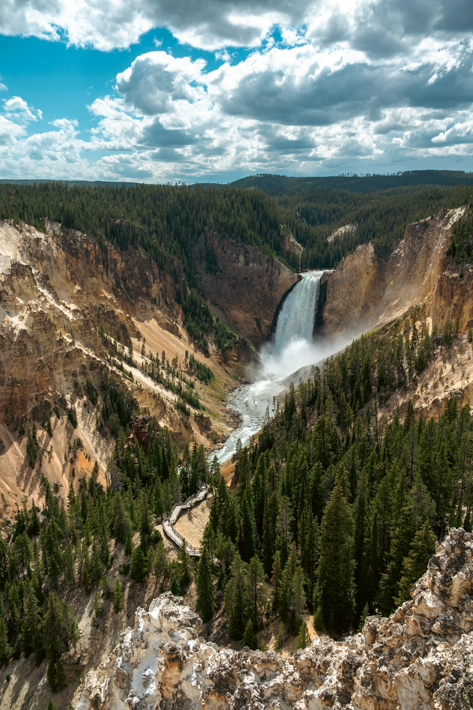

1核心结论
太原
→
大同
→
悬空寺
→
平遥古城
→
王家大院
→
壶口瀑布
→
返程
🕐 10 天怎么安排最合理
山西是「中国古建最密集的省份」，地上文物数量全国第一。一条 南北纵贯线串起所有精华：北边大同看云冈石窟、悬空寺，中部太原看晋祠，往南平遥古城与王家大院是晋商魂，最南端吉县的壶口瀑布则把黄河的咆哮端到眼前。10 天正好把「表里山河」从北走到南。
| 事项 | 结论 |
|---|---|
| 事项 | 结论 |
| 推荐方案 | 10 天 9 晚（太原 2 晚 + 大同 2 晚 + 平遥 2 晚 + 壶口 1 晚） |
| 返程约束 | 第 10 天下午/晚间返程 |
| 行程链 | 太原 → 大同 → 悬空寺 → 平遥 → 王家大院 → 壶口 → 返程 |
| 预算（人均） | 经济 2800–3800 ／ 标准 4500–6000 ／ 舒适 7500–10000 |
| 三件提前事 | ① 悬空寺限量放票提前购 ② 云冈石窟上午错峰 ③ 壶口瀑布查汛期与开放 |
| 季节提醒 | 春秋最佳；冬季大同冷但游客少，壶口 12–2 月有冰瀑奇观 |
| 交通卡 | 太原—大同、太原—平遥均有高铁，壶口段需包车/大巴 |
⚠️ 两个容易忽略的点
① 悬空寺每日限流且排队极长，务必提前预约并按时间段到达，旺季可能排 2 小时以上。② 山西景点之间车程远（大同—平遥约 300km），壶口瀑布一天之内往返太原很赶，建议在吉县住一晚看晨雾日出。
2推荐行程 · 10 天版
以下为 10 天 9 晚的推荐节奏。北段看石窟与悬崖古建，中段看晋祠与古城，南段收在黄河壶口，全程高铁 + 包车衔接。
| 日期 | 行程 | 过夜地 | 主题 |
|---|---|---|---|
| D1 抵晋 | 抵达太原，入住市区，晚上逛柳巷/食品街夜市 | 太原 | 抵达 + 太原夜市 |
| D2 | 晋祠 → 山西博物院（长信宫灯同级的镇馆之宝） | 太原 | 三晋文脉 |
| D3 | 高铁赴大同，下午云冈石窟 | 大同 | 北魏石窟 |
| D4 | 悬空寺 → 恒山（或华严寺替代） | 大同 | 悬崖古建 |
| D5 | 应县木塔 → 雁门关 → 返太原（包车） | 太原 | 辽金木构 |
| D6 | 高铁赴平遥，平遥古城（城墙 + 县衙 + 日昇昌） | 平遥 | 晋商古城 |
| D7 | 王家大院（或乔家大院），返平遥看《又见平遥》 | 平遥 | 晋商大院 |
| D8 | 包车赴吉县，壶口瀑布（山西侧） | 吉县 | 黄河奇观 |
| D9 | 壶口日出 → 返太原（经临汾高铁）→ 太原夜市 | 太原 | 返程过渡 |
| D10 返程 | 上午自由活动，下午返程 | — | 收尾 |
🧭 路线可调原则
喜欢佛教文化把恒山换成华严寺（辽代大雄宝殿）；时间紧可砍雁门关；带老人孩子建议恒山改乘索道、壶口段住两晚降低强度。五台山可替换壶口段（平遥→太原→五台山 3 天），但往返车程更远。
3逐小时时间线
以下为 10 天全程的逐小时执行时间线，可当作「当天打开照着走」的清单。标注 ※ 的可选项视体力与天气取舍。
D1 · 抵达太原
省城夜市开场
🚆 抵达日
| 时间 | 事项 |
|---|---|
| 14:00–17:00 | 抵达太原（高铁至太原南站/武宿机场），市区入住 |
| 17:30–19:00 | 晚餐：山西面食（刀削面、剔尖、剪刀面） |
| 19:30–21:30 | 柳巷 / 食品街夜市：沾片子、碗托、老陈醋体验店 |
| 22:00 | 回酒店休息 |
太原是山西高铁枢纽，太原南站班次密集。柳巷是老牌商圈，食品街集中了全省小吃，先在这里建立「山西味觉初印象」。
D2 · 晋祠 + 山西博物院
三晋文脉一日
🏛 文脉日
| 时间 | 事项 |
|---|---|
| 08:30–12:00 | 晋祠（参考价 80 元）：圣母殿、鱼沼飞梁、难老泉「三绝」，中国现存最早园林祠庙 |
| 12:00–13:00 | 晋祠周边午餐：刀削面、栲栳栳 |
| 14:00–17:00 | 山西博物院（免费需预约）：晋国霸业、佛风遗韵、土木华章展厅 |
| 17:30–19:00 | 晚餐：太原打卤面/羊杂割 |
| 19:30 | 回酒店 |
晋祠圣母殿前的鱼沼飞梁是现存唯一的宋代十字形古桥。山西博物院周一闭馆，务必提前预约，门口安检较严。
D3 · 大同云冈石窟
北魏佛国
🪨 石窟日
| 时间 | 事项 |
|---|---|
| 08:00–09:30 | 太原乘高铁赴大同（约 1.5 小时），办理入住 |
| 10:30–15:00 | 云冈石窟（参考价 120 元）：第 20 窟露天大佛为标志，前 20 窟是精华 |
| 12:00–13:00 | 景区简餐 |
| 15:30–17:30 | 大同古城墙（免费）：傍晚城墙骑行看日落 |
| 18:00 | 晚餐：大同刀削面、兔头、烧麦 |
云冈石窟开凿于北魏，是世界文化遗产。建议上午到达避开旅行团，第 16–20 窟（昙曜五窟）最震撼；景区有电瓶车往返。
D4 · 悬空寺 + 恒山
悬崖上的古建
🏔 奇观日
| 时间 | 事项 |
|---|---|
| 08:00 | 大同出发包车/自驾（约 1.5h）到浑源悬空寺 |
| 09:30–12:00 | 悬空寺（参考价 115 元，含登临）：建于悬崖峭壁 60 米高处，1500 年不坠 |
| 12:00–13:00 | 午餐：浑源凉粉（必吃） |
| 13:30–16:00 | 恒山（参考价 45 元，索道另计）：北岳恒山，会仙府、天峰岭 |
| 16:30 | 返回大同，或宿浑源县城 |
悬空寺门票分「入园票 + 登临票」，登临票限量每天约 2000 张，必须提前线上抢。登临栈道窄，恐高慎选。恒山海拔高，注意防风保暖。
D5 · 应县木塔 + 雁门关
辽金雄构
🛕 木构日
| 时间 | 事项 |
|---|---|
| 08:00 | 大同出发（包车约 1.5h）到应县 |
| 09:30–11:30 | 应县木塔（参考价 50 元）：世界最高木塔，66 米全木结构无钉铆 |
| 12:00–13:00 | 应县午餐 |
| 14:00–16:00 | 雁门关（参考价 90 元）：「天下九塞，雁门为首」，杨家将故地 |
| 16:30–19:00 | 返回太原（包车约 3h，或大同乘高铁） |
应县木塔已倾斜千年，现只开放一层参观，但外观极震撼。雁门关是长城重要关隘，秋季满山红叶最佳。当日车程较长，建议包车灵活掌握时间。
D6 · 平遥古城
晋商古城一日
🏯 古城日
| 时间 | 事项 |
|---|---|
| 08:30–09:30 | 太原乘高铁赴平遥古城（约 40 分钟），入住城内客栈 |
| 10:00–13:00 | 平遥古城墙（参考价 125 元通票）：登城墙看龟城格局 |
| 13:00–14:00 | 午餐：平遥牛肉、莜面栲栳栳 |
| 14:30–17:30 | 县衙 → 日昇昌票号 → 协同庆钱庄博物馆 |
| 18:00 | 晚餐后逛明清街夜景，看古城灯光 |
| 20:30 | 回客栈 |
平遥通票（125 元）3 天内有效，含 22 个景点，住城内客栈可反复出入。日昇昌是中国第一家票号，晋商金融史起点。
D7 · 王家大院 + 《又见平遥》
晋商大院一日
🏘 大院日
| 时间 | 事项 |
|---|---|
| 08:30 | 平遥包车/拼车赴灵石（约 1.5h） |
| 10:00–13:00 | 王家大院（参考价 55 元）：「王家归来不看院」，五巷六堡五祠堂 |
| 13:00–14:00 | 灵石午餐 |
| 15:00–17:00 | 返平遥，自由逛：清虚观、雷履泰故居、漆器店 |
| 19:00–21:00 | ※ 《又见平遥》（参考价 238 元起）：沉浸式情景剧，推荐 |
| 21:30 | 回客栈 |
王家大院比乔家大院大 3 倍以上，砖雕木雕极精。乔家大院在祁县更近太原，若时间紧也可二选一。演出票提前 2–3 天订。
D8 · 壶口瀑布
黄河咆哮
🌊 黄河日
| 时间 | 事项 |
|---|---|
| 08:00 | 平遥包车赴吉县壶口（约 3h，途经灵石、临汾） |
| 11:30–15:00 | 壶口瀑布（山西侧）（参考价 100 元，区间车另计）：看「千里黄河一壶收」 |
| 15:30 | 入住吉县酒店，晚餐：黄河大鲤鱼、吉县苹果 |
| 18:30 | 壶口瀑布夕阳，人少更出片 |
壶口瀑布 7–9 月汛期最壮观，水量可达平时的数十倍；冬季 12–2 月冰瀑也极震撼。山西侧与陕西侧隔河相望，山西侧看正面更佳。带雨衣，水雾打湿是常事。
D9 · 壶口日出 + 返太原
晨雾瀑布 + 返程
🚄 返城日
| 时间 | 事项 |
|---|---|
| 06:00 | 早起再看一次壶口晨雾（可选，光线极佳） |
| 08:30–10:00 | 早餐后出发，包车赴临汾（约 1.5h） |
| 10:30–12:00 | 临汾乘高铁返太原（约 1.5h） |
| 13:00–15:00 | 太原自由活动：柳巷补货（老陈醋、平遥牛肉、红枣） |
| 15:30 | 回酒店休整，晚餐：山西面食收尾 |
吉县—临汾—太原是高效返程路径；若直接自驾回太原约 4.5h。壶口日出为 5–6 月最佳，夏季多雨需看天气。
D10 · 返程
采购伴手礼 + 回家
🚄 返程日
| 时间 | 事项 |
|---|---|
| 08:30–11:00 | 自由活动：山西博物院（补看）或太原古县城；采购老陈醋、汾酒、平遥牛肉 |
| 11:30–12:30 | 午餐 |
| 13:00–15:00 | 退房，赴太原南站/武宿机场，返程 |
山西伴手礼三件套：宁化府老陈醋、汾酒（青花系列）、平遥牛肉；另有太谷饼、沁州黄小米。
4景点图鉴
必去（必去）/ 顺路（顺路）/ 可跳过（可跳过）。
必去
云冈石窟 参考价 120 元
北魏皇家石窟，世界文化遗产。露天大佛 + 昙曜五窟，5 万余尊佛像。

必去悬空寺 参考价 115 元（含登临）
悬崖 60 米高空悬建 1500 年。三教合一 + 木质栈道，全球奇险古建。

必去平遥古城 参考价 125 元（通票）
世界文化遗产，保存最完整古城。城墙 + 县衙 + 日昇昌票号。
 必去
必去壶口瀑布 参考价 100 元
「千里黄河一壶收」。汛期水雾冲霄，中华魂的具象化。

必去晋祠 参考价 80 元
中国现存最早祠庙园林。圣母殿 + 鱼沼飞梁 + 难老泉三绝。

顺路应县木塔 参考价 50 元
世界现存最高木塔。66 米纯木结构，900 年无钉铆。
可跳过
五台山 参考价 135 元
中国四大佛教名山之首。台怀镇 + 五爷庙 + 菩萨顶。
 顺路
顺路王家大院 参考价 55 元
「王家归来不看院」。五巷六堡，晋商大院的集大成者。
图片为 Unsplash 主题图（云冈石窟、悬空寺、平遥、壶口、木塔等山西主题），用于页面配图。更多免费去处：大同古城墙、太原汾河公园、平遥明清街夜景、灵石石膏山。
5路线地图
点击左侧节点可在地图上定位；点击地图 marker 会高亮对应节点。坐标为 WGS-84 转 GCJ-02 纠偏后标注。
6预算明细（三档）
以下为单人、不含购物的估算；门票为参考价。山西景点分散，包车是主要弹性支出；高铁可覆盖太原—大同、太原—平遥等主干。
| 项目 | 经济（2800–3800） | 标准（4500–6000） | 舒适（7500–10000） |
|---|---|---|---|
| 往返交通 | 高铁约 400–900 | 高铁/飞机约 900–1600 | 飞机+接送约 2500–3800 |
| 住宿（9 晚） | 青旅/客栈 750–1050 | 连锁+古城客栈 1500–2300 | 精品客栈+温泉 3800–5200 |
| 门票 | 核心约 350 | 含石窟+悬空寺+壶口约 550 | 全含+《又见平遥》约 850 |
| 餐饮（10 天） | 550–850 | 1100–1500（含面食全宴） | 2000–2600（地方宴席） |
| 省内交通 | 高铁+公交 350–550 | 高铁+拼车 700–1000 | 全程包车 1500–2500 |
💰 标准档示例账单（人均约 5000 元）
往返高铁 600 + 住宿 9 晚 1700（双人分 3400）+ 门票 550 + 餐饮 1300 + 省内交通 850 ≈ 5000 元。壶口段包车（平遥往返约 800–1000 元/车）拼 4 人最划算。
7备选方案
7.1 精华 6 天版
- D1 太原+晋祠
- D2 大同云冈石窟
- D3 悬空寺+应县木塔
- D4 平遥古城
- D5 王家大院+又见平遥
- D6 返程
7.2 佛教文化版（五台山）
把壶口段替换为五台山 3 天：平遥→太原→忻州→台怀镇，看五爷庙、菩萨顶、黛螺顶；带长辈尤其推荐，朝台需 2 天以上，整体节奏更慢。
7.3 冬季冰瀑版
12–2 月：壶口冰瀑「冰挂」奇观 + 大同古城雪景 + 平遥淡季人少，酒店便宜 30–40%；但悬空寺冬雪期间部分路段开放受限，提前确认。
8交通与住宿
8.1 山西 ⇄ 各地 交通
| 方式 | 时长 | 参考价 | 备注 |
|---|---|---|---|
| 高铁（推荐） | 北京—太原 2h，其余视出发地 | 二等座 130 元起 | 太原南站/大同南站均可 |
| 飞机 | 视出发地 1–2.5h | 400–1500 元 | 太原武宿机场，地铁/大巴进城 |
| 自驾 | 视出发地 | 高速+停车费 | 山路多，壶口段冬季注意结冰 |
⚠️ 省内交通核心提醒
太原—大同高铁约 1.5h、太原—平遥约 40 分钟，但壶口瀑布无直达高铁，需包车（平遥 3h / 临汾 1.5h 再高铁）。悬空寺—应县—雁门关段建议包车一日，比分段换乘省 2 小时以上。
8.2 省内交通
- 高铁：太原—大同、太原—平遥/临汾主干线，效率高
- 包车：悬空寺—应县—壶口等散点段首选，4 人拼车更划算
- 长途大巴：去五台山、壶口等景区有班次
- 出租车/网约车：市区 10–30 元，景区门口统一价
- 古城内：平遥住城内靠步行，城墙段可租自行车
8.3 住宿区域推荐
| 区域 | 价格/晚 | 优点 | 短板 |
|---|---|---|---|
| 太原市区 | 快捷 250–400 / 星级 500–900 | 高铁枢纽，柳巷商圈 | 城市景观一般 |
| 大同市区 | 快捷 250–400 / 古城内 400–700 | 近云冈与古城墙 | 冬季冷 |
| 平遥古城内 | 客栈 300–600 / 精品 600–1200 | 住进古城，夜游方便 | 停车不便，隔音一般 |
| 吉县（壶口） | 客栈 200–400 | 近瀑布，看日出方便 | 设施简单，选择少 |
9美食清单
🍽 必吃经典
- 刀削面（大同/太原）
- 平遥牛肉、碗托
- 莜面栲栳栳、剔尖
- 浑源凉粉、太原打卤面
🥮 伴手礼
- 宁化府老陈醋
- 汾酒（青花系列）
- 平遥牛肉真空装
- 沁州黄小米、红枣
🍢 地方味道
- 太原头脑（清和元）
- 大同兔头、烧麦
- 黄河大鲤鱼（吉县）
- 太谷饼、闻喜煮饼
📍 去哪吃
- 太原柳巷/食品街
- 大同凤临阁（烧麦）
- 平遥明清街小吃
- 吉县黄河鱼庄
⚠️ 美食防坑
① 山西面食「一餐一味」，点面记得配醋才正宗；② 平遥古城内饭店价格是城外 1.5–2 倍，认准明码标价；③ 壶口景区餐厅溢价明显，建议在吉县县城吃黄河鱼。
10出行贴士
10.1 行前清单
- 身份证、充电宝
- 保暖外套（大同/恒山风大）
- 防晒霜、墨镜（壶口）
- 雨具（壶口汛期水雾大）
- 悬空寺登临票提前抢
- 云冈/晋祠/山西博院提前约票
- 壶口查汛期与开放信息
- 下载高铁 12306 提前订票
10.2 防踩坑
🧳 四条提醒
① 悬空寺登临票限量，提前 7 天刷票是常态；② 山西古建多为木构，景区内禁烟禁明火；③ 壶口瀑布汛期水量大，观景台注意防滑、听从工作人员指引；④ 五台山若遇法会人多车堵，进出预留 1 小时缓冲。
🌟 一句话总结
山西是一本「立体的中国建筑史」——云冈的佛光、悬空寺的险绝、平遥的晋商气、壶口的黄河魂，串成一条从北魏走到民国的纵贯线。10 天从北到南，看的是千年木构不塌、听的是黄河咆哮不歇，离场时带走的是一身醋香和满脑子「表里山河」。